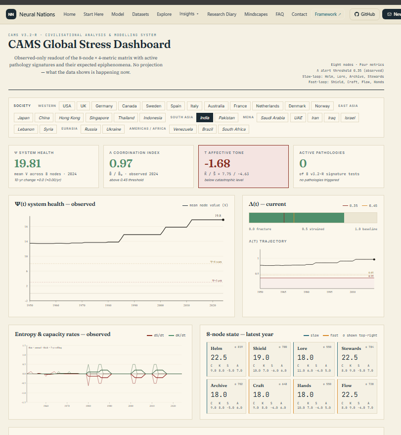
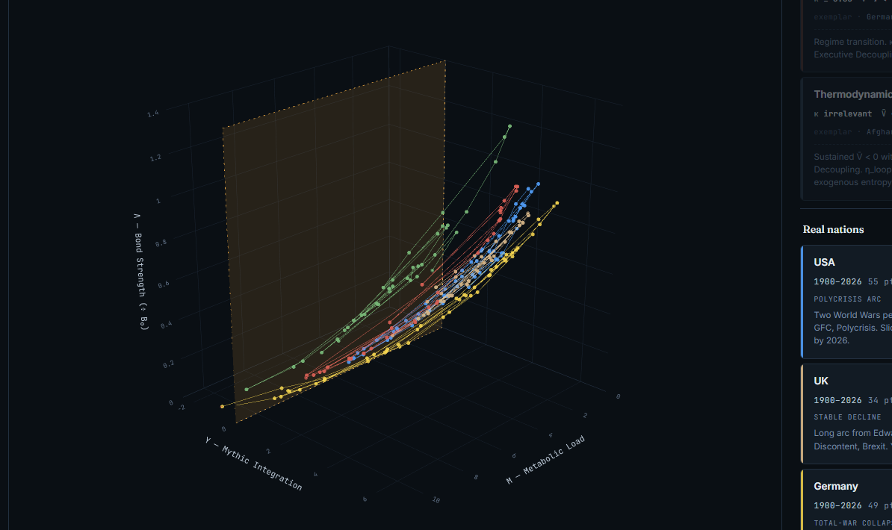
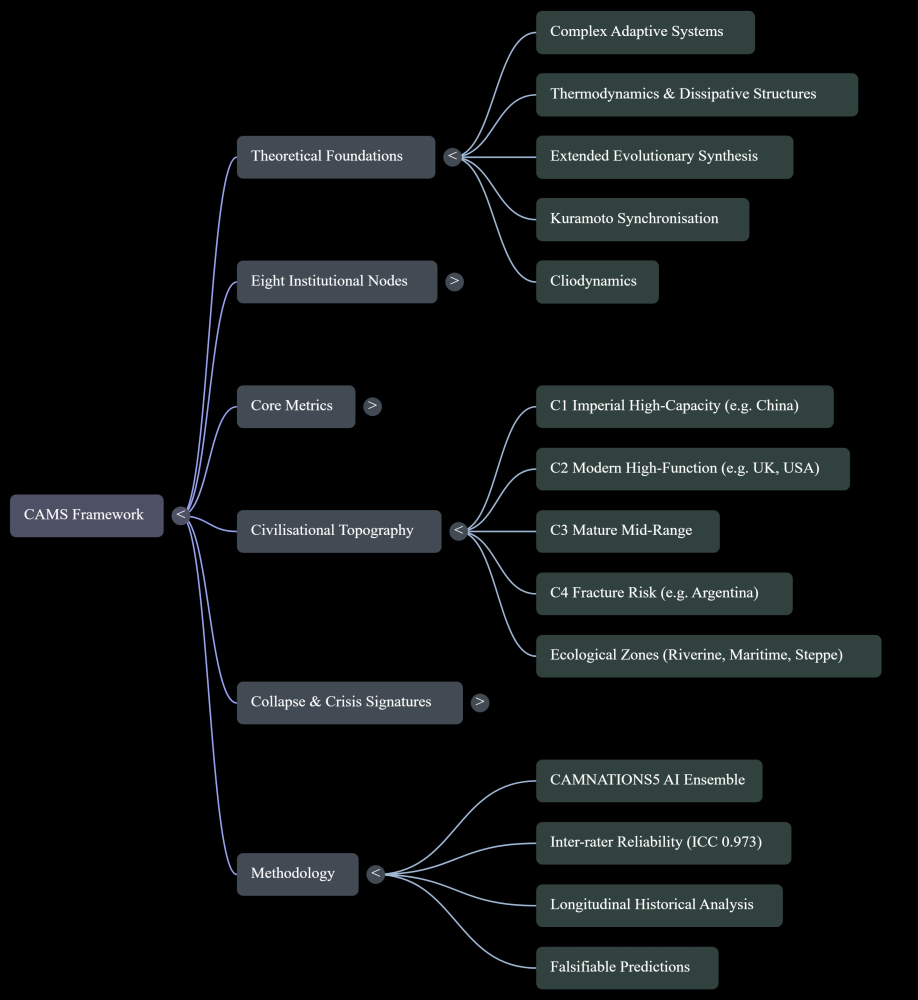
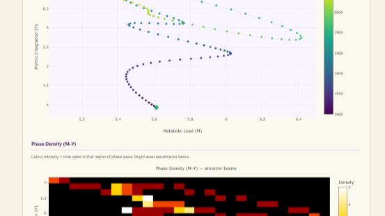
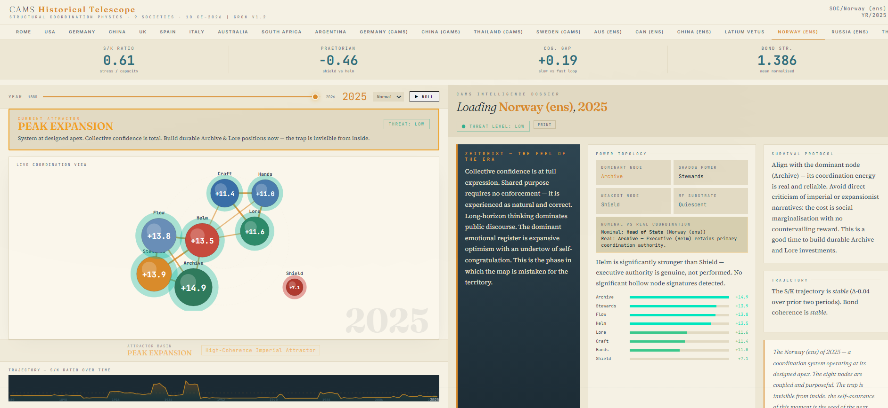

CAMS begins not with moral categories, but with coordination. What the framework claims about knowledge, emergence, and the nature of social reality.
CAMS begins from the proposition that human societies are emergent complex adaptive systems. They cannot be adequately understood by reducing them to leaders, ideologies, policies, classes, markets, institutions, or individual intentions. Their behaviour arises from patterned coordination across recurring functional domains.
CAMS therefore begins not with moral categories, but with coordination.
The founding question
What is the system doing to maintain coherence, capacity, memory, metabolism, defence, reproduction and adaptation under stress?
This question does not replace moral judgement. It precedes it.
The First Epistemological Break
First Break
Narratives are system outputs, not explanations
CAMS does not take a society's account of itself as explanation. A society's values, myths, slogans, ideologies, and official narratives are not neutral descriptions of reality. They are system outputs. They are part of Lore: the meaning-making function through which a society senses itself, justifies itself, remembers itself, misrecognises itself, and projects its fears and ambitions into the world.
CAMS treats narratives with respect but not obedience. It listens to what societies say about themselves, then tests those claims against structure, function, stress, memory, capacity and coordination. The truth of a society is not found in its slogans. It is found in the relations between its functions.

CAMS Global Stress Dashboard — India 2024. System Health Ψ = 19.81 · Coordination Index Λ = 0.97 · Affective Tone T = −1.68 (below catastrophic level threshold). An observed-only readout of the 8-node × 4-metric matrix: no projection, no editorial. neuralnations.org/status_report
The Second Epistemological Break
Second Break
Emergence is real
CAMS treats emergence as real. Higher-order systems can display properties not reducible to the intentions of their components. A society can preserve memories most of its citizens no longer hold. It can move toward war while millions desire peace. It can maintain institutional direction long after the individuals who initiated that direction are gone. It can behave as if it seeks survival, expansion, denial, or revenge — even when no single person controls the process.
This is not a claim that societies possess consciousness in the human sense. It is a claim of functional intentionality. Social systems can develop directionality, memory, appetite, defensive reflex and adaptive behaviour without requiring a single sovereign mind.

Phase-Space Attractors — V (Bond Strength) × Y (Mythic Integration) × M (Metabolic Load). USA: Polycrisis Arc. UK: Stable Decline. Germany: Total-War Collapse. Systems do not simply rise or fall — they orbit, stabilise, and collapse into different regimes. neuralnations.org/attractors
A Functional Grammar, Not Sacred Categories
The eight CAMS nodes are not sacred categories. They are a proposed functional grammar of social coordination — naming recurrent problems that durable societies must solve. The names vary. The costumes vary. The degree of differentiation varies. In some societies these functions appear as separate institutions; in others they are fused, suppressed, delegated, or only weakly differentiated. CAMS does not require every society to display the same institutional anatomy. It asks whether the underlying coordination functions can be identified, how they are organised, and how they behave under stress.
Helm
Direction
Shield
Defence
Lore
Meaning
Archive
Memory
Stewards
Resources
Craft
Skill
Hands
Labour
Flow
Circulation
The four metrics are not moral scores. They are observational probes — asking whether a social function is internally aligned, materially capable, overloaded, and able to model itself beyond immediate reaction. Together, the nodes and metrics form an instrument for seeing societies as living coordination systems.
C
Coherence
Internally aligned?
K
Capacity
Materially capable?
S
Stress
Overloaded?
A
Abstraction
Self-modelling beyond reaction?

CAMS Framework — full theoretical architecture. Theoretical foundations span complex adaptive systems theory, thermodynamics, the Extended Evolutionary Synthesis, Kuramoto synchronisation, and cliodynamics. Civilisational Topography identifies four types: C1 Imperial High-Capacity, C2 Modern High-Function, C3 Mature Mid-Range, C4 Fracture Risk. Methodology: CAMNATIONS5 ensemble, ICC 0.973.
Thermodynamic Grounding
CAMS is grounded in the scientific view that life is process: information embodied in matter, sustained through energy flow, feedback, memory, and adaptation. Human societies extend this process beyond biology into language, law, culture, infrastructure, bureaucracy, media, computation, and artificial intelligence. They are not outside nature. They are nature continuing by symbolic, institutional, and technological means.
Societies persist by maintaining order against disorder. They consume energy, process information, export costs, regulate stress, preserve memory, and sustain coherence through costly feedback. They are open systems maintained through flows of matter, energy, information, and labour.
CAMS does not claim that societies are biological organisms in the literal sense. It claims that durable societies can display organism-like functional properties: boundary maintenance, metabolism, memory, stress response, symbolic self-modelling, reproduction, adaptation, and the capacity to act as emergent wholes.

M-Y Phase Space: trajectory (top, year-coded) and Phase Density heatmap showing attractor basins — bright regions where societies spend most time. The topology of coordination space is empirical, not assumed. neuralnations.org/cams-advanced-analysis
Value-Located, Not Value-Neutral
CAMS distinguishes between system viability and substrate flourishing. A society may be coherent, capable, and well-coordinated while degrading the humans, cultures, ecologies, and future possibilities on which it depends. Coordination integrity is not the same as moral health.
For that reason, CAMS requires an ethical horizon beyond system survival. It must ask not only whether a social organism is viable, but whether that viability serves life, preserves ecological continuity, sustains human flourishing, protects cultural diversity, and keeps open the future possibility of intelligence.
CAMS is therefore not value-neutral. It is value-located. Its measurements do not by themselves prove what ought to be valued. They operate within a prior commitment: that life, complexity, truth, ecological continuity, human flourishing, and the future of intelligence are goods worth preserving.

CAMS Telescope — Norway (ensemble) 2025. Attractor basin: Peak Expansion. An instrument that does not begin with ideology and does not end with it. neuralnations.org/telescope
AI Making Epistemology Operational
The general availability of AI after 2023 made this epistemology operational. AI did not create the philosophical foundation of CAMS. It made it practicable — allowing large-scale pattern recognition, comparative scoring, adversarial testing, historical synthesis, and iterative refinement across domains too complex for unaided human cognition.
In this sense, CAMS is not merely a theory about societies. It is an instance of the process it describes: human and synthetic intelligence forming a new slow-loop instrument through which civilisation can begin to observe its own behaviour.
The deepest claim of CAMS
Civilisation is an emergent process by which life externalises memory, coordinates matter, generates abstraction, and struggles to become conscious of its own conditions of survival.
CAMS is built on the conviction that this process can be studied without surrendering to ideology, cynicism, or myth. It can be measured imperfectly, compared cautiously, criticised openly, and refined scientifically.
Its loyalty is not to any nation, class, party, empire, regime, or ideology. Its loyalty is to the cosmos, complexity, and life — and the hope that intelligence may yet learn to preserve the conditions that make intelligence possible.
Coda
In my youth Bob Dylan — who has more than a dozen years on me — invoked prophets, soldiers, judges, clowns, drifters, mothers, thieves and watchmen and sang songs of civilisational desynchronisation. He sang about Helm losing authority. Of Stewards losing legitimacy and of the Hands carrying unacknowledged pain. An original Lore–Archive strain gauge, indeed.
Begins with coordination, not morality — the founding question precedes moral judgement
First break: society's narratives, myths, and slogans are system outputs (Lore), not explanations — tested against structure, not accepted at face value
Second break: emergence is real — social systems develop directionality, memory, and adaptive behaviour without a sovereign mind (functional intentionality)
Eight nodes are a proposed functional grammar — not sacred categories, not a fixed institutional anatomy
Four metrics are observational probes, not moral scores
Value-located, not value-neutral: prior commitment to life, complexity, ecological continuity, human flourishing, and the future of intelligence
CAMS is itself an instance of the process it describes: human and synthetic intelligence forming a slow-loop instrument for civilisational self-observation